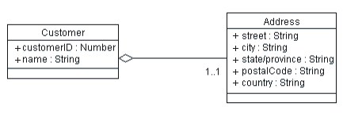
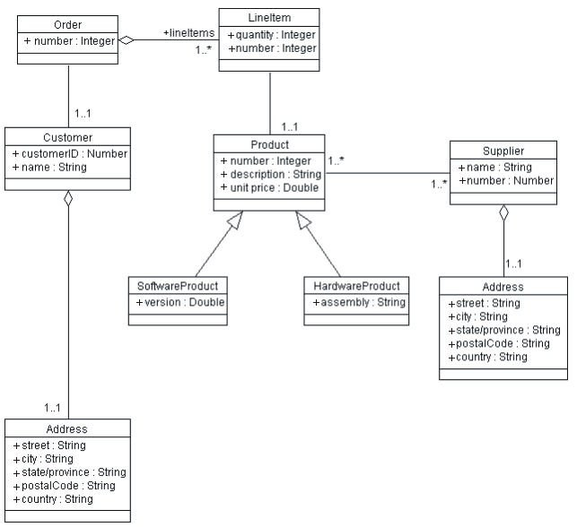

| Рекомендация: Обратное проектирование реляционных баз данных |
 |
|
| Связанные элементы |
|---|
ВведениеДалее описываются действия, необходимые для выполнения обратного проектирования базы данных и связывания получившихся таблиц модели данных с проектируемыми классами модели проектирования. Эти действия могут выполняться проектировщиком баз данных в начале внесения изменений в базу данных в рамках цикла эволюционной разработки. Дизайнер баз данных должен управлять обратной проектированием на протяжении всего жизненного цикла проекта. В многих случаях обратное проектирование выполняется на ранних стадиях жизненного цикла проекта, а затем изменения вносятся инкрементально без потребности в по следующем обратном проектировании базы данных. Основные этапы обратного проектирования базы данных и преобразования получившихся элементов модели данных в элементы модели проектирования:
Обратное проектирование базы данных RDBMS или сценария DDL для получения модели данныхРезультатом обратного проектирования базы данных или сценария на языке определения данных (Data Definition Language - DDL) обычно является набор элементов модели (таблиц, представлений, хранимых процедур и т.д.). В зависимости от сложности базы данных может потребоваться разделить полученные элементы модели на пакеты, содержащие логически связанные наборы таблиц. Преобразование модели данных в модель проектированияДалее приводятся инструкции по генерированию классов проектирования на основе элементов модели данных. Репликация структуры базы данных в модели классов выполняется относительно просто. Инструкции, приведенные ниже, содержат алгоритм преобразования элементов модели данных в элементов модели проектирования. В следующей таблице дается сводка общего соответствия элементов моделей данных и проектирования.
Некоторым элементам модели данных нельзя четко противопоставить элемент модели проектирования. Примерами таких элементов являются табличное пространство и собственно база данных, соответствующие физическим параметрам хранения и представляемые в качестве компонентов. Другим таким элементом являются представления базы данных, фактически являющиеся "виртуальными" таблицами и не имеющих смысловой нагрузки в модели проектирования. Кроме того, это индексы и первичные ключи таблиц и триггеров, используемые для оптимизации работы СУБД и имеющие смысловое значение только в контексте базы данных и модели данных. Преобразование таблицы в классСоздайте класс для каждой преобразовываемой таблицы. Для каждого столбца таблицы создайте в классе атрибут с соответствующим типом. Попытайтесь найти самое близкое соответствие между типами атрибутов и типами полей таблицы. Пример Рассмотрим таблицу Customer, имеющую следующую структуру:
Структура таблицы Customer Для таблицы создается класс с таким же именем, Customer, имеющий следующую структуру:
Первоначальная версия класса Customer В первой версии класса Customer для каждого столбца таблицы Customer в нем присутствует соответствующий атрибут. Область видимости всех таких атрибутов - public, т.к. возможен запрос к любому столбцу таблицы. Значок в виде знака "+" слева от атрибута означает, что область видимости последнего - 'public'. По умолчанию все атрибуты, получаемые при преобразовании таблиц RDBMS, должны быть общедоступными, так как в RDBMS разрешено делать запросы ко всем столбцам. Идентификация внутренних и неявных классовКлассы, получающиеся в результате прямого преобразования "таблица - класс", часто содержат атрибуты, которые могут быть выделены в отдельный класс, особенно в случаях, когда эти атрибуты присутствуют в нескольких сгенерированных классах. Такие "общие" атрибуты обычно появляются в результате денормализации таблиц для улучшения производительности, или как следствие слишком упрощенной модели данных. В таких случаях разделите класс таким образом, чтобы он являл собой нормализованное представление таблиц. Пример После определения класса Customer можно определить класс Address, содержащий информацию об адресах (предположив, что в системе будут другие ссылки на адреса). Таким образом, получаем два класса:  Класс Customer после выделения из него класса Address Тип связи между этими элементами - агрегирование, т.к. один адрес принадлежит только одному клиенту и следовательно является частью полного определения заказчика. Внешние ключиСоздайте ассоциацию между классами для каждой связи по внешнему ключу в таблице. Удалите атрибут из класса, ссылающегося на столбец внешнего ключа. Если столбец внешнего ключа изначально представлялся в виде атрибута, удалите его из класса. Пример Предположим, что таблица Order имеет следующую структуру:
Структура таблицы Order В таблице Order столбец Customer_ID является внешним ключом. Он содержит первичный ключ таблицы Customer, связывающий ее с Order. Это представляется в модели проектирования следующим образом:
Представление связей через внешние ключи в модели проектирования Внешний ключ представляется в виде ассоциации между классами Order и Item. Отношение "многие-ко-многим"В моделях данных RDBMS отношения "многие-ко-многим" представляются таблицей объединения (join table), или таблицей связей (association table). Таким образом, отношения "многие-ко-многим" представляются с помощью вспомогательных таблиц с первичными ключами двух объединяемых таблиц. Такие вспомогательные таблицы нужны из-за того, что поле внешнего ключа может содержать только один первичный ключ. Если одна запись связана с несколькими записями в другой таблице, и наоборот, то возникает необходимость в таблице связей. Пример Рассмотрим случай продуктов, которые могут поставляться любым из поставщиков. Поставщик может заниматься несколькими продуктами. Структура таблиц Product и Supplier:
Структура таблиц Product и Supplier Для связи этих таблиц в целях поиска продуктов, доступных у заданного поставщика используется таблица Product-Supplier.
Структура таблицы Product-Supplier В этой таблице объединения содержатся пары первичных ключей продуктов и поставщиков (с возможностью повторения), таким образом формируя связь между ними. Одна строка таблицы показывает, что у конкретного поставщика доступен н конкретный продукт. Если взять все строки, у которых Supplier_ID равен ИД конкретного поставщика, то получим список продуктов, доступных у него. В модели проектирования эта вспомогательная таблица является избыточной, поскольку объектная модель позволяет представлять отношения "многие-ко-многим" напрямую. На рисунке показаны классы Supplier и Product и их взаимосвязь. Кроме того, на нем показан класс Address, извлеченный из Supplier в соответствии с рекомендациями, оговоренными ранее.
Классы Product и Supplier ОбобщениеЧасто среди всех таблиц несколько будут иметь схожую структуру. В модели данных нет понятия обобщения, поэтому она не позволяет представлять схожесть структуры таблиц. Иногда аналогичная структура получается в результате денормализации (для повышения производительности), как в случае 'неявной' таблицы Address, выделенной из другого класса. В других случаях более фундаментальные параметры являются общими, которые можно представить в виде общего базового класса и двух или больше подклассов. Для выявления возможности обобщения ищите часто повторяющиеся в разных таблицах столбцы, когда таблицы более схожи, чем различны. Пример Рассмотрим таблицы SoftwareProduct и HardwareProduct:
Таблицы SoftwareProduct и HardwareProduct Общие столбцы выделены синим цветом. Как видно, общей является большая часть обоих таблиц и они различаются только одним полем. Эту общность можно представить выделением общего класса Product и объявление классов SoftwareProduct и HardwareProduct подклассами Product:
Классы SoftwareProduct и HardwareProduct - потомки базового класса Product Соберем все основные классы системы заказов вместе.  Сводная диаграмма классов для системы заказов Репликация поведения RDBMS в модель проектированияРепликация поведения - более сложная задача, т.к. обычно реляционные базы данных не являются объектно-ориентированными и провести аналогию между их поведением и операциями с классами в объектной модели сложно. Далее приведены действия, которые могут помочь реконструировать поведение классов, идентифицированных ранее:
Организация элементов в модели проектированияКласс проектирования, создаваемые в результате преобразований "таблица - класс", следует организовывать в модели проектирования в пакеты проектирования и/или подсистемы проектирования, на основе общей архитектуры приложения. См. Понятия: Разделение на уровни и Понятия: Архитектура ПО. |
||||||||||||||||||||||||||||||||||||||||||||||||||||||||||||||||||||||||||||||||||||||||||||||||||||||


© Copyright IBM Corp. 1987, 2006. Все права защищены.. |